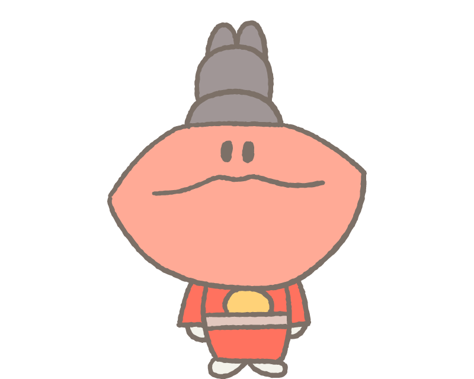

당신은
왕이 될 상
페미니스트
스스로 통찰하고 사회를 파악하는 능력이 뛰어난 당신이 큰 변화를 만들지도! 당신의 목소리를 단단하게 키워줄 책들이에요.
- 지적인 도전을 즐기는 편이에요. 호흡이 긴 책도 마다하지 않아요.
- 사회에 관심이 많고, 실용적인 지식에서 힘을 얻어요.
- 평소 페미니즘에 관심이 깊고 실천하려고 해요.
- 치열한 글, 멋진 책을 발견해요.
이런 책이 잘 맞아요!
크리스틴 델피 가부장제의 정치경제학
주적
1970년 프랑스 사회과학계를 달군 크리스틴 델피의 『주적』 완역. 왜 여성 억압이 되풀이되는가? 이 짧은 책으로 혁명의 언어가 태동하는 순간을 만나보자.

감옥으로부터의 소영
독재정권하를 살며 두 개의 감옥을 깨고 나온 60세 ‘소영’의 일생을 담은 에세이. 지금의 나라 꼴에 미쳐버리지 않고 나의 존엄을 지키고자 하는 모든 이에게 바칩니다.

국어, 수학, 페미니즘!
학교에서 페미니즘을 필수 교과로 가르쳐보았다
지금 한국의 교육 현실을 우려하지 않는 사람은 없다. 하지만 학교가 페미니즘을 가르칠 때, 학생들은 빠르게 변화했다. 20년 차 교사가 만든 성평등 학교 현장 이야기.